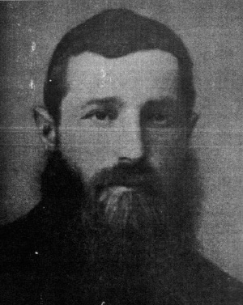

A Great Genius and a Devoted Chassid
The Chassid, Rabbi Yehoshua Zelig Aharonov was one of the main askanim in Orsha. He worked with mesirus nefesh for the Rebbe Rayatz and was sentenced to four years of hard labor because of these “ crimes . ” * Presented to mark his passing on 18 Elul .

R’ Yehoshua Zelig was born in 5656/1896 in the town of Kachanov. His father was the Chassid, R’ Menachem Mendel Aharonov. Immediately after his upsheren, he was sent to school where his teacher observed his outstanding abilities.
One time, he and some friends went to his grandfather’s house where they were preparing to bake matzos for Pesach. He saw that the work was delayed. When he asked about the delay, they told him that they were waiting for a certain person who had gone to ask a halachic question regarding the flour. As they were waiting, one of the men jokingly asked him, “You are preparing to be a rabbi, so how would you answer?”
Zelig unhesitatingly gave his answer and his reasoning behind it. When the person came back from the rav, all present were astonished to hear that the answer and the reasoning were identical to his.
His teacher spoke to him before his bar mitzva, saying, “You need to prepare a drasha for your bar mitzva. Study this daf and when you finish learning it in depth, come back to me.”
The boy studied and went back to his teacher. “Did you have any questions on the daf?” asked the teacher.
The boy mentioned a number of questions that he had thought of as he learned, but this did not satisfy his teacher who told him to relearn the daf. The boy returned to the beis midrash and sat and learned until morning. He was gratified to find the intricate question his teacher had in mind.
When he joyfully went to his teacher, his teacher said, “Now look at such-and-such tractate on such-and-such daf and you will find the answer to the question. This scene repeated itself several times until he finished the pilpul which he delivered at the bar mitzva seuda. Most of those present couldn’t follow it all the way through, but the Torah scholars among them did. Zelig became renowned as an ilui.
A TAMIM AND LAMDAN
After his bar mitzva, Zelig headed for Yeshivas Tomchei T’mimim in Lubavitch where he passed the two admissions committees, the official one and the clandestine one, and received the Rebbe’s approval. He eventually became one of the outstanding students. Along with his diligence in learning Nigleh, he was also extremely assiduous in his learning of Chassidus and was immersed in avoda and darkei ha’chassidus. Thanks to his giftedness and tremendous diligence, he combined Nigleh and Chassidus, haskala and avoda.
The maamarim he heard from the Rebbe were engraved in his mind and heart. He never missed a chazara despite how late those reviews went, and then he reviewed the maamarim until he could repeat them verbatim. He devoted himself particularly to learning Ayin-Beis.
Now and then, rabbanim and roshei yeshivos would come to test the bachurim. One time, the rav from Kalinkovich came to test the bachurim in Nigleh. Afterward, he said about Yehoshua Zelig that he was an outstanding scholar with whom he could discuss divrei Torah on a deep level. During that period, Yehoshua Zelig corresponded with the Rogatchover Gaon.
GRUELING MEDICAL EXAM
When he became of draft age, Zelig asked the Rebbe what he should do. The Rebbe told him about a certain procedure to damage one foot so it would be shorter than his other foot and he would receive an exemption. The Rebbe added, “This will be of benefit to you.” Zelig was taken aback because it sounded like the Rebbe wasn’t referring to a temporary handicap. Nonetheless, he strengthened his faith in the Rebbe and went ahead with the procedure.
When the military doctors examined him, they wanted to release him. However, there were other military personnel present who said that since too many Jews were exempt, they should examine all those present again to ensure that their handicaps were genuine. Zelig was kept in the clinic so they could keep him under surveillance. He was ordered to minimize smoking and to eat certain foods before the next exam which was done under general anesthesia.
During his enforced hospitalization, Zelig listened to the doctors’ orders in the same way Chassidim followed the instructions of Misnagdic rabbanim. What they told him not to eat, he ate and what they told him to eat, he did not eat. When they anesthetized him, something went wrong and they were afraid he would not regain consciousness, but thank G-d, he recovered and was exempted from military service.
SMICHA FROM RADATZ
During the war, groups of bachurim began leaving the central yeshiva. R’ Aharonov, together with some other bachurim, including Yisroel Jacobson, Alexander Sender Yudasin, Moshe Yosef Gottlieb, and Boruch Puterman, went to Chernigov where they spent precious time with the singular Chassid of that generation, R’ Dovid Tzvi Chein (Radatz).
The bachurim chose to learn in a neighborhood on the edge of the town, in the wagon drivers’ shul. This was because they davened early in the morning and the shul was then empty and available for them to learn in. R’ Dovid Tzvi complained that he couldn’t do a good job raising money to support them when they learned in a place where nobody saw them. But he greatly desired having the bachurim remain near him and he maintained the makeshift yeshiva in Chernigov.
When Radatz asked him whether he had smicha, Zelig said no, and he wasn’t interested. Radatz reproved him for this and said that since he was a scholar, it was worth obtaining smicha. Radatz eventually tested him and awarded him smicha.
IN THE YESHIVOS OF CHARSON AND CHARKOV
Before 19 Kislev, the bachurim received a letter from R’ Shlomo Zalman Havlin, in the name of the Rebbe Rashab, which said that since a new yeshiva was founded in Charson, they should go there. R’ Aharonov and other bachurim went to Charson, in the Ukraine, where they learned in the yeshiva headed by R’ Eliezer Dvoskin (may Hashem avenge his blood). Regarding the move to Charson, R’ Yisroel Jacobson wrote many years later, “In relation to the current state of obedience amongst the students, there stands before me that picture, how I did not even entertain any idea or thought, but immediately packed up and traveled.”
When they arrived in the yeshiva, there were already some young bachurim there, and R’ Tzvi Gottlieb of Kovna served as a teacher. The yeshiva was run by several balabatim who were devoted to the yeshiva. They included R’ Yisroel Chartok, the Bezpalov brothers (sons of R’ Yaakov Mordechai, the famous rav of Poltava), their uncle, R’ Notte Hansburg, R’ Aryeh Leib Nannes and his wife, the Plotkin brothers, R’ Avrohom Yaakov Sklar and R’ Moshe Charitonov.
In the yeshiva there learned a group of talmidim from Lubavitch. The famous ones are: R’ Ezriel Zelig Slonim, R’ Eliezer Nannes (Subbota), R’ Betzalel Wilschansky, and R’ Menachem Mendel Rosenmutter.
“From the day I left Tomchei T’mimim,” wrote R’ Aharonov in a letter that he wrote twelve years later, “I was in Charson by instruction of the Rebbe to found a branch of Tomchei T’mimim there and then in Charkov. In 5620, when my father passed away, I had to leave for home.”
R’ Boruch Friedman served as the mashgiach in Charkov, but the influence of the great mashpia, R’ Shilem Kuratin was strongly felt in the yeshiva. After a few months, R’ Shilem came to serve as mashpia. Before he arrived, R’ Shilem wrote a letter to the bachurim in which he told them “It was decided here to appoint over you as mashgiach, the Tamim Boruch Friedman. All your conduct is under his jurisdiction, and from now on you should not mix into anything, just keep the s’darim of learning Nigleh and Chassidus, learning diligently. He has permission to draw close as well as to push away and punish those who cause difficulties, G-d forbid, as he sees fit. Whatever you lack, present to him and he will try to improve matters, with Hashem’s help. Obey him and his words should be heard and accepted by you with full force, and that is how they will be heard by us.” Then R’ Shilem goes on to explain a deep question in Chassidus which R’ Yehoshua Zelig had asked.
R’ Yehoshua Zelig was a tremendous talmid chochom. After his passing, in the prime of his life, they found material he had written with deep chiddushim in Nigleh and Chassidus.
STRENGTHENING JUDAISM IN ORSHA
After marrying Chava Shpeter, daughter of R’ Aharon Chaim who was known as the genius from Lukomli, R’ Yehoshua Zelig started a business in Orsha. He was one of the outstanding askanim in the town. Orsha was a Chassidic town until World War I. After the war, when the cursed communists rose to power, the Jewish character of the town was in danger. R’ Zelig arranged underground schools for children and shiurim for young and old. He arranged minyanim and made sure that the mikva was operational.
He was so involved in Jewish life upon his arrival in the town that when two Jews were talking and one sadly said to the other, “The evil empire closed down all the schools and the secret police are making sure that citizens obey the law. What will be with our children?” the other one said, “Don’t worry, as long as R’ Zelig Aharonov is here, there will be teachers for our children.”
Although he did not hold an official rabbinic position, R’ Zelig was the one to turn to for all Jewish matters. In 5784, R’ Yehuda Chitrik passed through Orsha and R’ Zelig told him that the town had no rav and that after he asked the Rebbe Rayatz, he urged the townspeople to accept R Shaul Dovber Zislin as the rav.
R’ Shaul Dovber arrived and delivered two talks. The townspeople marveled over his smooth delivery and he was accepted with great honor as the rav. R’ Shaul Ber’s arrival provided a new impetus in the work of promoting Judaism and Chassidus.
HARD LABOR IN SIBERIA
Like all the townspeople, the NKVD knew good and well that R’ Zelig was responsible for most of the Jewish activity in the town. After enough evidence was accumulated against him, they arrested him one night in 1932. He was interrogated for hours, day and night without stop. After bravely withstanding them and not divulging any names of his fellow Chassidim, he was sentenced to eight years of hard labor in Siberia.
His wife spared no effort and managed to reach senior government officials who worded a letter for her to the president of the Soviet Union, Kalinin, who was considered more favorable to the Jews than all the other party members. These people warned her that if it was discovered who had helped draft the letter, not only would they be dismissed from their jobs, but they would also be accused of the serious crime of aiding a counter-revolutionary.
The letter made a strong impression on Kalinin who promised to examine the file and see what could be done. A short while later, his answer was that he would shorten the sentence to only four years.
However, even four years in Siberia was a severe punishment. The bitter cold, the exhausting labor, and the paltry meals that religious Jews could eat, were a constant threat to the lives of exiled Jews. Before he knew that his sentence was halved, R’ Zelig prayed that he would at least merit a Jewish burial.
It was at this time that he saw how far-reaching the Rebbe’s vision was. Upon arriving in his place of exile, they saw that one leg of his was shorter and they gave him easier work that enabled him to easily refrain from working on Shabbos.
In the camp, he met a Jew who told him that he came from a respectable family and he was a religiously observant person until the Revolution. It turned out that the man’s brother had learned with R’ Zelig in Tomchei T’mimim. R’ Zelig put in great effort to be mekarev the man and bring him back to Torah, and the man became a baal t’shuva and kept all the mitzvos he could keep in the labor camp. He would consult with R’ Zelig over every question that arose.
MESIRUS NEFESH FOR T’FILLIN
The law in the camp was that when prisoners arrived, anything with strings was confiscated, such as shoelaces and belts. They confiscated R’ Zelig’s t’fillin despite his protests.
Each prisoner was given a certain number of postcards to be used to write home. When the cards were used up, they could not correspond until new ones were given out. R’ Zelig, who could not wait for the card distribution, gave his meager bread ration to another prisoner in exchange for his card. On it (besides his message home), he printed the letters “Rashi” in tiny print.
When the postcard arrived, his wife did not understand what the significance of the letters was. When she showed it to her father he exclaimed, “Oy, he doesn’t have t’fillin!” The family put together a large package of clothing and food and sent it to him.
When the package arrived, they opened it and searched it in front of him. When they didn’t find anything, they gave it to him. When he turned over the bundle, he heard a muffled sound. The hidden t’fillin had fallen out of their hiding place. From then on, he had t’fillin which he could put on in hiding.
One day, R’ Zelig met another Chassid, R’ Zalman Tzeitlin, and R’ Zelig lent him his t’fillin every day even though this entailed mesirus nefesh.
CAST YOUR (PALTRY) BREAD UPON THE WATER
After four difficult years, a broken and exhausted R’ Yehoshua returned home to Orsha. When Anash fled at the beginning of World War II, he managed to arrive with them in Samarkand. Despite his frailty, he put great effort into all mitzvos. On Sukkos, Chassidim remember him putting the s’chach on the sukka himself and saying out loud, as he did every year, “When the Alter Rebbe would put s’chach on his sukka, he would say to do it with a thick covering, and that is what I do too.”
For Pesach 5702, despite the wildly inflated costs of basic foods, he asked his only son, Menachem Mendel, to bring a guest. His son found someone who had nowhere to eat and brought him home. For this man, it was a matter of saving his life because he had barely eaten in days.
R’ Zelig passed away on Chai Elul 1943. In those days, many died of starvation and the chevra kadisha were overloaded with work. The gravedigger dug graves all day and whoever was brought, was buried immediately.
When they brought R’ Yehoshua Zelig, the gravedigger asked the chevra kadisha and the relatives to wait because he had a special place, among rabbanim and men of stature, for him. When the chevra kadisha asked him what he knew of the deceased and why he chose to bury him in a more respected place, he said, “This morning, the deceased came to me in a dream and asked whether I knew him. I immediately told him yes, because as I walked about on Pesach and had no kosher food and was about to expire, a boy came over to me and asked me to join him for Yom Tov. This saved my life. The deceased said to me in the dream, ‘I died this morning. Please try to do a chesed shel emes with me and bring me to a proper Jewish burial.’
“So for this Chassid who loved to do chesed, I have a place among tzaddikim and Chassidim.”
D. Levanon. "A Great Genius and a Devoted Chassid." Beis Moshiach, no. 893 (August 19, 2013).